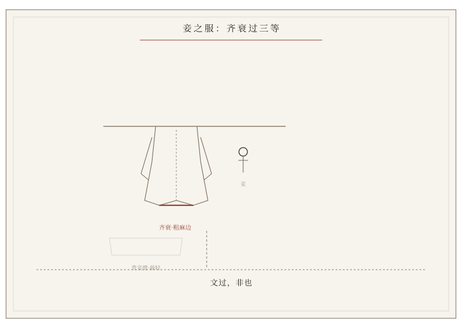

檀弓下 · 四·六十五 · 第 390 课
悼公之母死，哀公为之齐衰。有若曰：「为妾齐衰，礼与？」公曰：「吾得已乎哉？鲁人以妻我。」
说什么事：悼公的母亲死了，鲁哀公为她服齐衰。有若问：「为妾服齐衰，合礼吗？」哀公说：「我能够不作罢吗？鲁国人都把她当作我的妻。」
落在哪一层：以「国人之口」文过。过不在服，在借人之口自解。
为何编在此位：上节论君欲学僭礼，此节论君自行过礼。一为子，一为妾，皆以「情」破「制」。
【经】悼公之母死，哀公为之齐衰。有若曰：「为妾齐衰，礼与？」公曰：「吾得已乎哉？鲁人以妻我。」
【注】母，哀公之妾。／讥而问之。妾之贵者，为之缌耳。／言国人皆名之为我妻，重服嬖妾，文过，非也。
【疏】此一节论哀公为妾著服非礼之事。／天子诸侯绝旁期，于妾无服，唯大夫贵妾缌。以哀公为妾著齐衰服，故举大夫贵妾缌以对之耳。／公以有若之讥，遂文其过，云：吾岂得休已而不服之乎？所以不得休已者，虽是其妾，鲁人以我无夫人，皆以为我妻，故不得不服。
悼公 鲁悼公，哀公之子。
齐衰 五服之一，仅次于斩衰，服期一年或三月。
妾 非正妻。
礼与 合礼吗。
得已 能够作罢。已，止。
鲁人以妻我 鲁国人都把她当我的妻。
文过 文饰其过。注云「重服嬖妾，文过，非也」。
悼公的母亲死了，哀公为她服齐衰。有若问：「为妾服齐衰，合礼吗？」哀公说：「我能够不作罢吗？鲁国人都把她当作我的妻。」
此章只三句。一句陈述，一句讥问，一句自解。
郑注在末句下断以「文过，非也」四字。
第一层 妾之服 注云「妾之贵者，为之缌耳」——贵妾只服缌麻，最轻的一等。
疏更明：「天子诸侯绝旁期，于妾无服，唯大夫贵妾缌。」
故哀公之齐衰，比礼所许者高了三等。
第二层 「礼与」二字的分寸 有若不直斥，只问「礼与」。
此一问法，是礼中之谏：不判其非，只请其自判。
第三层 哀公之答：一个转嫁 他不答「该不该」，答「我不能不作罢」。
此一答法，古今通行：把自己的选择，说成别人的逼迫。
第四层 「鲁人以妻我」 此句是全章最要紧处。
疏云：「虽是其妾，鲁人以我无夫人，皆以为我妻。」——注意此语之实：鲁人之所以如此看，是因为君无夫人。
故这不是国人的错，是君的缺。 一个不立夫人的君，使人不得不以妾为妻；使立之，则人自不以妾为妻。
哀公以自己造成的局面，为自己辩护。
第五层 「文过」二字 注云「重服嬖妾，文过，非也」。
「文」者，饰也。 把一句现成的话拿来遮一个不当的行为，此之谓文过。
礼所最不许者，不是失，是饰。 失可改，饰则失被藏起来。
第六层 对比上一节 上一节哀公欲学僭礼，这一节哀公自行过礼。
同一君，两次失，皆以「别人也这样」为据。 一次据臣，一次据国人。
《檀弓》记此二事相连，其意可思：一个人若总以他人为尺，则无尺。
与今日何干 今人破规矩，常有一句挡箭牌：「大家都这样。」
此章给一句：别人怎么看，不能替代礼怎么看。
| 左 | 右 |
|---|---|
| 悼公之母死 | 妾 |
| 哀公为之齐衰 | 服过三等 |
| 礼与 | 讥而问之 |
| 妾之贵者缌 | 礼所许 |
| 吾得已乎哉 | 转嫁 |
| 鲁人以妻我 | 借人之口 |
| 因君无夫人 | 实情 |
| 文过 | 饰其失 |
| 非也 | 郑之断 |
画一件展开的丧服，悬在一根横木上，视点平视。衣为上衣下裳相连之形，前襟敞开，下摆边缘加画一道粗麻边，示齐衰。衣之右侧立一人形，身形略小，头上无饰。衣之左下方另画一件极轻薄的短衣，只以两三笔示意，与那件丧服并列而短。两件之间画一条竖虚线，示其等之差。不画文字。赭色只用在那件丧服下摆的粗麻边上。
